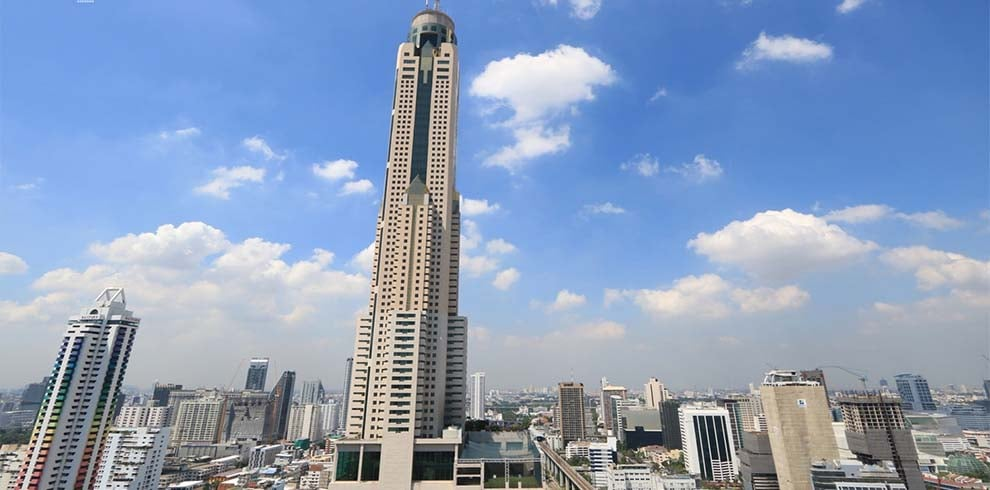
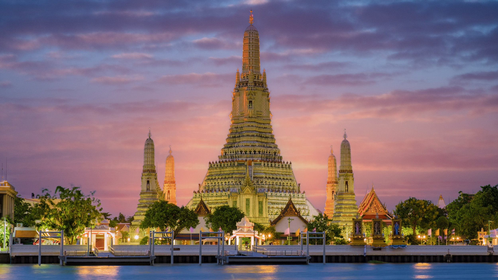
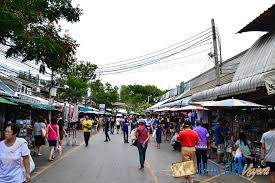

Viatge a Tailandia
Primer dia
El primer que vaig fer en arribar a Bangkok va ser anar a l'hotel més alt que hi ha a Bangkok el Baiyoke sky hotel, vaig deixar les maletes i vaig menjar alla ja que arribi just per l'hora del dinar i després em vaig posar a triar quin lloc volia anar primer. La veritat que els preus de Bangkok son molt asequibles, sobretot el menjar que pots arribar a menjar per 2 euros.
Al final vaig decidir anar al temple més famós i bonic de Bangkok que es diu Wat Arun, aquesta al costat d'un riu i el paisatge és impressionant, és un temple budista i té unes construccions impressionants, quan el vaig veure completament vaig agafar un vaixell perquè és una atracció que hi ha i es veu a la perfecció el temple. Un punt a destacar es que estava ple de gent.
Després de veure el temple vaig anar amb metro a veure el mercat de Chatuchak que només està obert els caps de setmana i és el mercat més gran de tot Tailàndia, allà hi havia també molta gent però valia la pena perquè hi havia moltes coses a més que sopi allà i el menjar estava molt bo encara que cal anar amb compte perquè solen estafar els turistes.
Segon dia

Aquest dia vaig visitar un mercat
Tercer dia

Darrer dia dedicat a descansar a Phuket.
Plats típics
Elpad thai ni el tom kha gai.Són plats molt típics i autèntics de la cuina tailandesa.